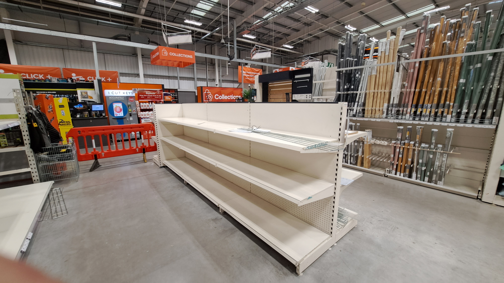
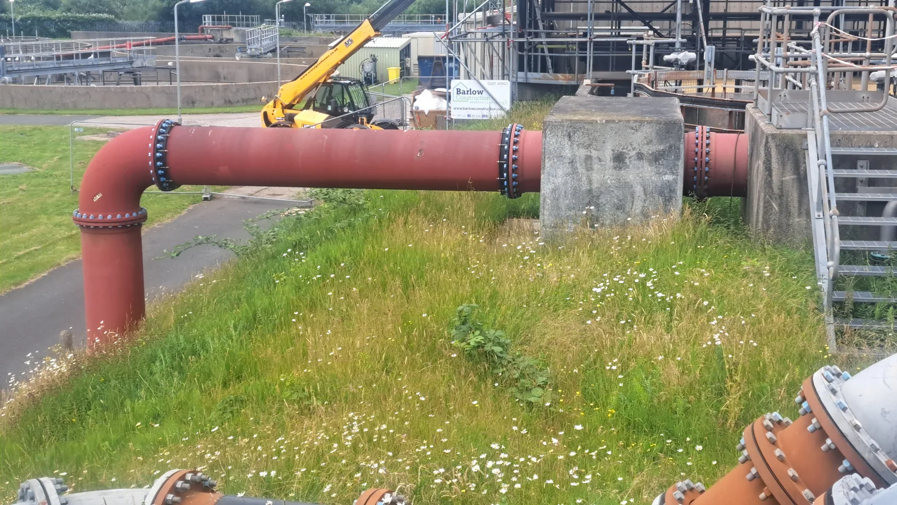
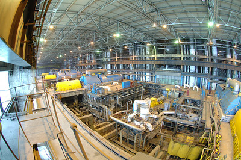
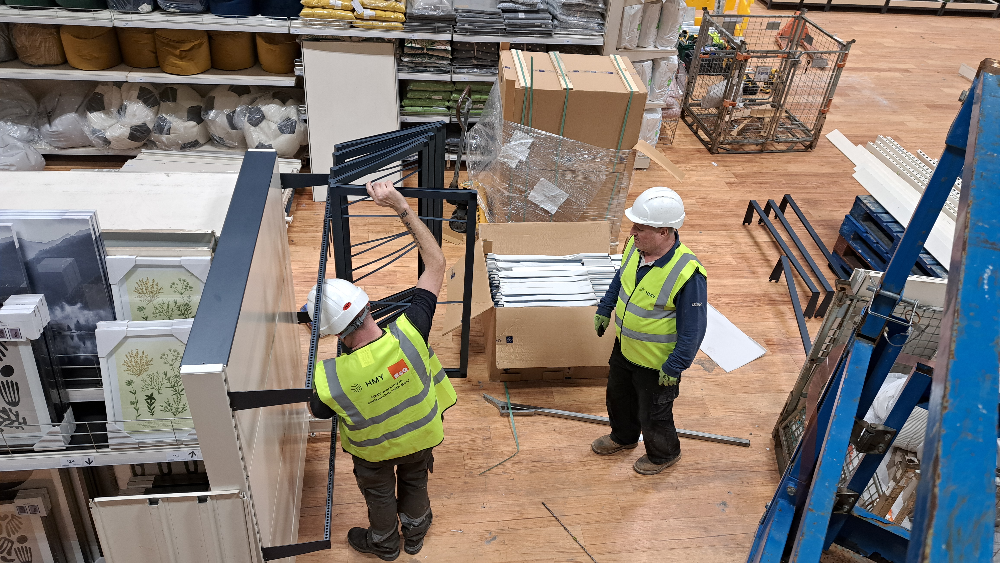

Real sites · Real projects · Nationwide
Engineering.
Built to deliver.
Retail rollouts, electrical installations, shopfitting, CCTV and specialist project support — shown through the work itself.
270+Project trips
100+Locations
UK-wideDelivery
Multi-sectorCapability
Choose a capability
The work is the navigation.
No stock photography. These panels use the project images you supplied, with teal overlays and white typography doing the branding.

National Rollouts
Shopfitting & Retail
Gondolas, racking, corrals, sales floors and large-scale store programmes.

Electrical
Commercial & Retail
Installations, distribution, lighting and site systems.

Water & Wastewater
Process, Pumping & Controls
Pump repairs, MCC upgrades, telemetry, process repairs, NRVs, tank cleaning and site electrical works.

Security
CCTV Systems
Commercial and industrial surveillance.

Retail Technology
Digital Signage
Display installation and rollout support.

Portfolio
Projects in Detail
Browse genuine project photography from the supplied archive.
Wastewater · Pump Stations · Telemetry · MCC Upgrades · National Rollouts · Electrical · Gondola Builds · Lighting Rafts · HD Racking · CCTV · Digital Signage · Data · Fire Systems · Shopfitting · Wastewater · Pump Stations · Telemetry · MCC Upgrades · National Rollouts · Electrical · Gondola Builds ·


Nationwide delivery